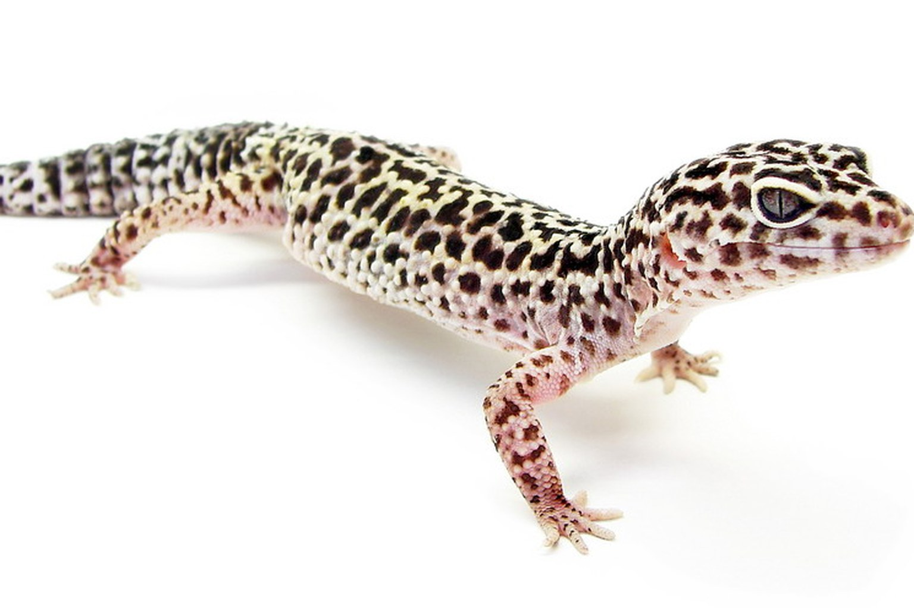

Do Leopard Geckos Need UVB — or Just a Heat Mat?
The honest answer is more interesting than either camp admits: leopard geckos are crepuscular, not nocturnal, and a low-level UVB zone changes how you supplement calcium.

Many leopard gecko keepers still run a dry tank with an under-tank heat mat and nothing else, because a leopard gecko is a crepuscular animal (active around dawn and dusk) that retreats into a humid hide and self-regulates into it. Registered thermo guns on 40-gallon enclosures confirm what we all know: a mat set at 32 °C directly above it on the tank floor, a cool end running 24-26 °C, and yet the animal still stops eating in about the fourth week of every winter. The question "do leopard geckos need UVB light or just heat mats" collapses two different systems — one is heat, the other is light and vitamin D. A tank that only provides the first is asking the animal to synthesise the second from dietary D3 alone, and that holds until a shed or an appetite collapse tells you it doesn't.
So the short answer is: they don't have an absolute requirement for UVB in the sense that a fully D3-supplemented animal can survive without it, but the past decade of exotic-animal clinical consensus has moved toward providing proper lighting as standard welfare. It isn't heat versus UVB. It's heat and light, held in the right ratio, with the gecko Eublepharis macularius choosing its own gradient.
The night the thermostat did nothing
November, my own adult male, a normal-phase I'd had for six years. He'd stopped chasing food, and I'd assumed brumation. The mat was warm to touch, so I left it. Three weeks in, I put a probe on the actual floor of the tank and read 29 °C at the hot side. Fine. Then I put it in his favourite hide and got 19 °C. The mat was running off the cage floor, not the interior — the substrate had gone dry and dense and was insulating right back. He'd been living at 19 °C and I'd been looking at a shiny dial. I replaced the thermostat, moved the mat, and phoned the vet anyway for a £200 check he didn't need. Kept the receipt.
The thermoregulation case for a heat gradient
Leopard geckos are terrestrial insectivores with a fairly wide tolerance, but they don't do well with a single temperature. The target is a gradient across the floor, not a spot: 30-32 °C on the warm side, 24-26 °C in the cool end, and a humid hide at 80-90 % relative humidity. Place the humid hide on the warm side; a humid hide over 26 °C grows mould within a week or two, in my experience.
The mechanism is behavioural. The gecko moves across the gradient to reach its preferred body temperature (typically 30-32 °C), which drives digestion, gut motility and immune response. Keep the whole tank at the warm side and the animal has nowhere to cool; keep it cold and the gut slows, the gecko eats but doesn't digest, and you get regurgitation. The mat is fine for the warm floor but it does not heat the air, so a cool room pulls heat straight out of the tank overnight. A thermostat with a dimming function — not an on/off switch — keeps the floor within about 1 °C of target and avoids overshoot.
The cheapest fix when you're unsure of the surface temperature is a probe corrector:
Run a gun across the floor in a grid, not just the hot spot. Any surface the gecko can press its belly against should read inside 24-32 °C.
UVB: the mechanism, the dose, and the honest uncertainty
Vitamin D3 is what lets a gecko absorb calcium across the gut wall; without it, dietary calcium passes through and the gecko draws the deficit from its own bone. That's nutritional secondary hyperparathyroidism — bone resorption, rubbery jaw, curved limbs in juveniles. Two routes: dietary D3 (Rep-Cal with D3, dusted), or endogenous synthesis in the skin, which needs UVB in the 290-320 nm band. The best evidence that leopard geckos use a UV source comes from their behaviour — many will voluntarily bask under a low-output tube when offered one — but the species is a poor basker and a lot of the "it never basks" reports are from animals where the lamp was simply too intense or too close.
What I use now: a 5-6 % tube across about a third of the enclosure, 30-40 cm above the gecko's back with a reflector, producing a UVI of 0.5-1.0 at the basking surface. It doesn't have to be more. It runs for a photoperiod of 10-12 hours, colour matches the seasons, and the D3 dusting stays in place at one feed a week. I've stopped taking the "UVB is unnecessary for crepuscular geckos" line seriously, because the animals I've kept under a low-output tube show better shedding than the ones I kept dark.
Stages, sheds and the system view
- Juvenile / subadult (0-12 months): more calcium in the diet (D3 dust every feed for the first six months), more frequent sheds, higher risk of a stuck shed under the toes if the humid hide is dry. Check toe tips weekly.
- Adult (12+ months): D3 dust on one feed in two or three, a UVB tube if you have one, and a warm hide that the gecko can actually turn around in — 20 × 20 cm minimum for an adult.
- Female breeders: require additional calcium and a higher basking temperature to buffer the reproductive demand. Don't overdo supplements if you're already using UVB.
Treat the tank as a small system, not a glass box. A little drainage in the humid hide (a layer of gravel under the coco fibre) stops the hide going sour. A clean-up crew of dwarf isopods and springtails survives in the humid corner, not the dry floor; put it where the gecko doesn't dig. Bioactive is optional, and I don't run it in the leopard gecko tank — the dry floor kills the crew. That's a personal call, not a welfare ruling.
| Stage | Warm side floor | Cool side | Feed / D3 dusting | UVB |
|---|---|---|---|---|
| Juvenile 0-6 mth | 30-32 °C | 24-26 °C | Every feed | 0.5-1.0 UVI, 30 cm |
| Subadult 6-12 mth | 30-32 °C | 24-26 °C | Every other feed | 0.5-1.0 UVI, 35 cm |
| Adult | 30-32 °C | 24-26 °C | One in three | 0.5-1.0 UVI, 35-40 cm |
| Gravid female | 31-33 °C | 24-26 °C | Every other feed | 0.6-1.0 UVI, 30 cm |
What to buy, and what to skip
Two pieces of kit get the job done. A dimming thermostat on the heat mat on the warm side, and a small UVB tube with a reflector.
Go for the 5-6 % tube, not the 10-12 % reptile tube. You want a UVI of 0.5-1.0 at 30-40 cm, not a desert-basking level. Mount the tube inside the vivarium, not above a mesh lid that eats the output. Replace the bulb every 12 months whether or not it still glows, because the UV output drops before the visible light does. On the supplementation side, D3 dust still belongs in the routine even with UVB — the two routes are belt and braces, not a replacement.
If you're buying a calcium powder, the one I use is
Common mistakes
- "My gecko doesn't bask, so UVB is pointless." The animal may be moving under the lamp on the way to the warm hide. Watch at dusk, not midday.
- Placing the humid hide on the cool side and then wondering about mould. Warm side, gravel base, replace the substrate monthly.
- Using an on/off thermostat and a ceramic bulb on a timer. The floor temperature swings 5-8 °C, and a young gecko that lives there stops eating.
Frequently asked questions
Can I keep a leopard gecko without UVB?
Yes — an adult can be kept on a heat mat with dietary D3 supplementation, and many have been. Whether "can" should mean "should" is the part that's moved. I now recommend a low-output tube as standard, because the shedding and feeding records are better and the animal is offered the choice of basking. It's not a hard requirement, but it is good practice.
Do leopard geckos need a heat lamp at night?
No. They're crepuscular, so the warm hide floor should stay around 30 °C at night but the room can drop to 18-20 °C without harm. A ceramic heat emitter on a thermostat holds the floor temperature without light pollution. Don't run a bright lamp overnight; the animal needs its day-night cycle.
What UVI should a leopard gecko get?
For a low-output 5-6 % tube mounted 30-40 cm above the gecko's back, measure 0.5-1.0 UVI at the surface. A standard UVI meter and a gun will tell you if the reflector has aged. Don't aim above 1.2. The animals are poor baskers and a high dose is wasted at best.
What we actually use
Four pieces of equipment that do most of the work in a Leopard Gecko setup. Nothing here is here because a brand asked.
-
Check price on AmazonHabitat & Decor
UVB + Heat Lamp Fixture Combo
A low-output UVB tube plus fixture — the setup that makes supplementation simple rather than guesswork.
Typical price $45–75 -
Check price on AmazonHabitat & Decor
Heat Mat with Dimming Thermostat
Belly heat is still the primary requirement. The thermostat is what makes it safe.
Typical price $45–75 -
Check price on AmazonHabitat & Decor
Infrared Thermometer Gun
Surface temperature at the hot spot, measured rather than assumed.
Typical price $18–30 -
Check price on AmazonFeeding
Rep-Cal Calcium with D3
UVB and dietary D3 are one decision. Get the lamp right, then dust accordingly.
Typical price $11–17
Links open Amazon in a new tab. We do not set or track prices.
Affiliate disclosure. As an Amazon Associate, we earn from qualifying purchases. Every card in this guide is an affiliate link — it costs you nothing, and we only list gear we have run in our own enclosures.